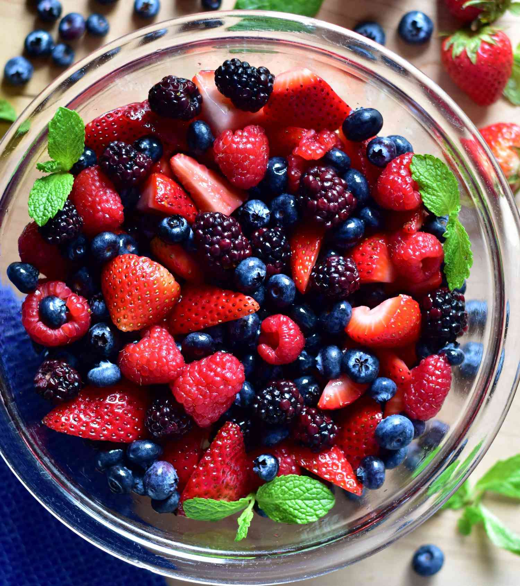

Definition: Berries are small fruits that can provide HP and status condition restoration, stat enhancement, and even damage negation when eaten by Pokémon.
Flavors determine whether a Pokémon will benefit or suffer from eating a berry based on their nature.
and here are type of Berries Flavors.